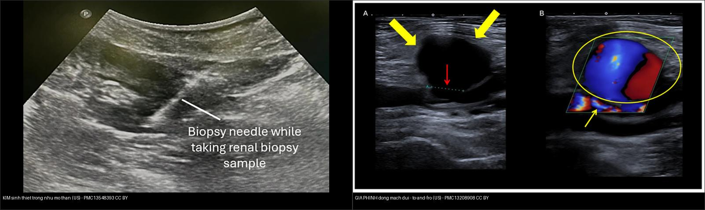
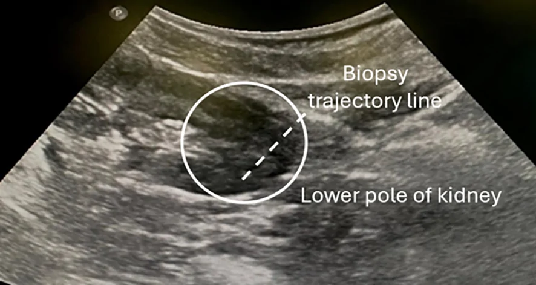
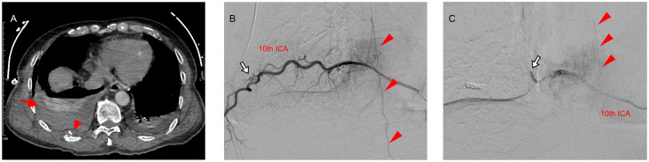
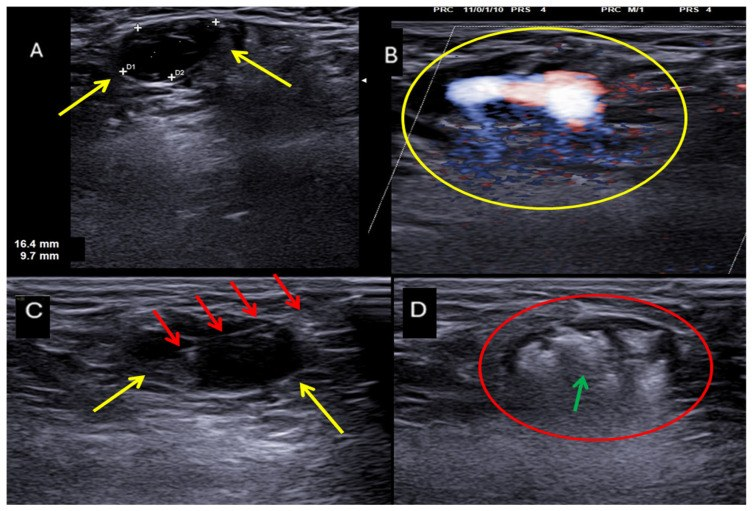
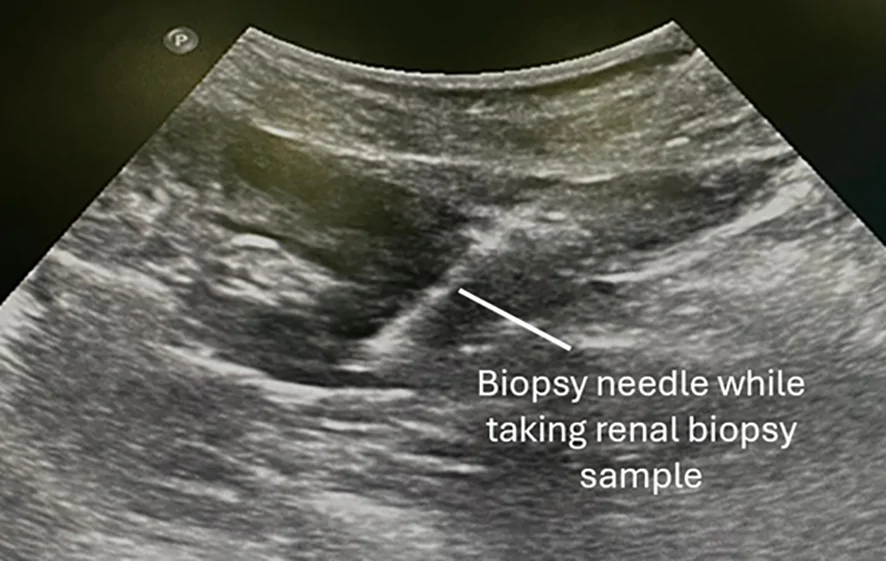

900 — Đại cương IR: kim, đông máu & cửa sổ chọc / IR fundamentals
Tags: pattern:an-toan-IR vung:can-thiep score:SIR
Mức chắc chắn (certainty): tổng hợp y văn (literature synthesis) — nhóm tự biên từ y văn mở, chưa gắn ca nguyên văn đơn lẻ.
1. Tổng quan — đông máu + giải phẫu mạch là 2 cửa sống còn
- SIR phân loại chảy máu: nguy cơ thấp (INR < 1,8–2,0 + tiểu cầu > 20–50k) vs cao (INR < 1,5 + tiểu cầu > 50k) — TẠI SAO ngưỡng khác nhau: chọc tạng/mạch lớn không ép được vs chọc nông ép được.
- Đơn vị French (1 Fr = 0,33 mm) + Gauge ngược (G càng lớn kim càng nhỏ) — TẠI SAO chọn kim nhỏ nhất làm được việc: giảm chảy máu + giả phình đường vào.
- Thượng vị dưới (thành bụng) + liên sườn (bờ dưới sườn) — TẠI SAO: mạch chạy bờ dưới sườn + thượng vị nuôi thành bụng, đâm trúng là máu ổ bụng/ngực.
2. Gamut thủ thuật (Gamut)
- Chọc hút/dẫn lưu nông + đông máu đạt: nguy cơ thấp — làm + ép.
- Sinh thiết gan/thận + INR 1,6: nguy cơ cao — sửa đông máu trước.
- Đường vào đùi + mạch đả: siêu âm + micropuncture + nút mạch khi rút.
- Dị ứng thuốc + suy thận: bù nước + giảm liều + thay thế (CO2/MRI).
3. Bảng so sánh phân biệt (ma trận đối chiếu)
| Thực thể (entity) | Hình ảnh/kỹ thuật | Chốt vào (rule-in) | Chốt loại (rule-out) | Gợi ý xác nhận |
|---|---|---|---|---|
| Nguy cơ thấp | Chọc nông + ép được + đạt ngưỡng | INR/TC đạt + ép được | Tạng sâu → cao | Làm + theo dõi |
| Nguy cơ cao | Tạng/mạch + INR/TC chưa đạt | Sửa đông máu trước | Đạt ngưỡng → thấp | Vit K/huyết tương/tiểu cầu |
| Đường vào an toàn | Siêu âm + tránh thượng vị/liên sườn | Thấy mạch + tránh được | Mù + mạch ngang → đổi đường | Micropuncture + siêu âm |
| Biến chứng đường vào | Máu tụ + giả phình + thông động-TM | Sưng + thổi + Hb rơi | Ổn định → ép + theo dõi | Ép/nút/mổ |

Trái: siêu âm — kim sinh thiết (đường tăng hồi âm) nằm trong nhu mô thận đúng đích (Alturkistani H, Front Nephrol 2026, PMC13548393, Fig. 3, CC BY). Phải: siêu âm Doppler màu — giả phình động mạch đùi sau thủ thuật, thấy túi (mũi tên vàng) + cổ (mũi tên đỏ) và dòng "to-and-fro" (Borzelli A et al., J Pers Med 2026, PMC13208908, Fig. 4, CC BY). Ảnh ghép letterbox giữ tỷ lệ.4. Protocol an toàn IR
- Checklist: đông máu + thuốc + dị ứng + thận + đường vào siêu âm + đồng ý trước mọi thủ thuật; Fr nhỏ nhất + kim 1 lần.

Quét siêu âm dọc để lập kế hoạch đường vào trước khi chọc — bước bắt buộc để chọn cửa sổ an toàn và tránh mạch/tạng. Alturkistani H, Front Nephrol 2026 (PMC13548393, Fig. 1), CC BY — nguyên bản.flowchart TD
A[Chỉ định IR] --> B{Nguy cơ chảy máu?}
B -->|Thấp + đạt| C[Làm + ép]
B -->|Cao/chưa đạt| D[Sửa đông máu trước]
5. Cạm bẫy
- Thượng vị dưới/liên sườn đâm mù — siêu âm mạch trước mọi chọc bụng/ngực.
- Ngừng kháng đông/kháng kết tập sai — huyết khối vs chảy máu, hội chẩn + bridging.
- Suy thận + thuốc cản quang liều cao — bù nước + hạn chế + theo dõi creatinine.
- Động mạch liên sườn chạy bờ dưới sườn — chọc liên sườn mù rất dễ trúng: nhìn ảnh DSA dưới đây, động mạch bám sát bờ dưới xương sườn (đầu mũi tên) và giả phình có thể hình thành sau chấn thương/chọc → chọc luôn đi bờ trên sườn + siêu âm dò mạch.

Semba R et al., Radiol Case Rep 2026 (PMC13264221, Fig. 1), CC BY — nguyên bản.
Xử trí biến chứng đường vào không cần mổ: tiêm thrombin dưới hướng siêu âm làm tắc túi giả phình. Borzelli A et al., J Pers Med 2026 (PMC13208908, Fig. 5), CC BY — nguyên bản.6. Tự lượng giá — Blind Quiz
Ca 1 — Sinh thiết gan + INR 1,7 + tiểu cầu 45k: nguy cơ nào? Làm luôn hay sửa? (Bảng mục 3.)

- Câu hỏi: Nhận ra kim trên siêu âm bằng dấu hiệu gì? Với INR 1,7 và TC 45k thì chọc được chưa?
Bấm để hiện đáp án
- Kim = đường tăng hồi âm (hyperechoic line) vuông góc trục dài thận khi bắn kim — xác nhận kim trong vỏ thận.
- Nguy cơ cao (tạng): cần INR < 1,5 + TC > 50k — sửa đông máu trước (nguy cơ thấp chỉ cho chọc nông).
- Nguồn ảnh: Alturkistani H, Front Nephrol 2026 (PMC13548393, Fig. 3), CC BY.
Ca 2 — Chọc dịch màng phổi mù đường nách sau + máu tươi: sai ở đâu? (Bảng mục 3.)
Bấm để hiện đáp án
- Đâm mạch liên sườn (bờ dưới sườn): siêu âm + đi bờ trên sườn + ép/nút mạch. Đối chiếu ảnh DSA động mạch liên sườn ở mục 5.
- Nguồn số liệu/ảnh: Semba R et al., Radiol Case Rep 2026 (PMC13264221), CC BY.
Bài liên quan chéo
- 3123 – Tắc mạch khí y sinh: 0,02–0,06% sau can thiệp phổi qua da, tắc mạch khí não 0,02–0,4% — tử vong 20–30%; khí trong tim trái/động mạch chủ (−1.000 HU); CT sọ sớm chỉ nhạy ~40% → chụp lại < 6 giờ; 100% O₂ + HBO trong 48 giờ, tràn khí màng phổi chưa dẫn lưu = chống chỉ định HBO (mới — nối 098/1800/1698)
- 900 – Tổng quan IR
- 945 – Nhiễm & biến chứng port-a-cath/CVC: CRBSI, huyết khối, pinch-off, thoát mạch–ép tim (mới — cùng nhóm đường vào/thủ thuật)
- 920 – Nút mạch (cầm máu)
- 150 – Bosniak (sinh thiết thận)
Không dùng để chẩn đoán độc lập khi chưa có người hướng dẫn.